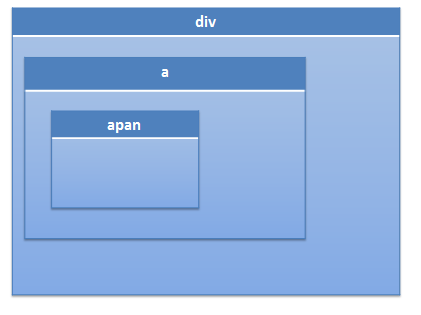

前言
新的一天又开始了，我们对今天对未来抱有很大期待，所以开始我们今天的学习吧，在此之前来点题外话，还是爱好问题。
周三的面试虽然失败，但是也是很有启迪的，比如之前我就从来没有想过爱好问题，我发现我的爱好如下：
① 霹雳布袋戏
完了就米有什么爱好了，其实我完全可以说自己爱好旅游什么的，我也确实爱好旅游，只不过比较穷，走的地方不多罢了，这里又扯出一个话题：
学习工作与生活
我们为了理想需要学习需要工作，工作完了需要生活，现在是前者分量掩盖了后者，所以以后的世界要注意了。
好了进入今天的学习吧，我们今天来看看javascript里面的事件吧。
事件交互
javascript与html之间的交互是通过事件实现的，我们使用侦听器注册事件，
在事件发生时候便执行相关的代码，这就是传说中的观察者模式
事件流
事件捕获与冒泡的出现十分有意思，当浏览器发展到第四代时（IE4），出现了一个小意思的问题：
页面的哪一部分有什么事件？浏览器开发团队也不知道了，想象我们页面的元素：
1 <div> 2 <a>刀狂剑痴<span>叶小钗</span> </a> 3 </div>

我们点击span时候是不是也点击了a呢？点击a是不是也点击了div呢，依次上升到body与html
事件流描述的是从页面中接收事件的顺序
IE采用事件冒泡流
标准采用事件捕获流
最后addEventLister给出了第三个参数同时支持冒泡与捕获
事件冒泡
由span开始一直传播至document
事件捕获
由document向下传播至span
事件处理程序
事件就是用户或者浏览器自身执行某种动作，比如click、load、mouseover。
而响应某个事件的函数就叫做事件处理程序（事件监听器），事件处理程序的名字以on开头，click=>onclick、load=>onload
1 el.addEventListener(eventType, function () { 2 3 }, false); 4 5 该方法应用至dom节点 6 第一个参数为事件名 7 第二个为事件处理程序 8 第三个为布尔值，true便是事件捕获，false为事件冒泡
既然都说到了addEventLister，我们来看一看这段代码吧：
1 <html xmlns="http://www.w3.org/1999/xhtml"> 2 <head> 3 <title></title> 4 </head> 5 <body> 6 <div> 7 <a>刀狂剑痴<span id="el">叶小钗</span> </a> 8 </div> 9 <script type="text/javascript"> 10 var el = document.getElementById('el'); 11 el.addEventListener('click', function () { 12 alert('冒泡'); 13 }, false); 14 el.addEventListener('click', function () { 15 alert('捕获'); 16 }, true); 17 </script> 18 </body> 19 </html>
我们同时给一个dom绑定了click事件，并且一个是冒泡，一个是捕获，我们的执行顺序是怎么样的呢？
答案一：先冒泡再捕获
但是答案真的是这样的吗？我们将代码改下：
1 var el = document.getElementById('el'); 2 el.addEventListener('click', function () { 3 alert('捕获'); 4 }, true); 5 el.addEventListener('click', function () { 6 alert('冒泡'); 7 }, false);
如此一来便是先捕获再冒泡了，我想说这道题真的好耍赖啊。。。。
那么现在我们是离真相近了还是远了呢？其实真相依旧扑所迷离：
1 <html xmlns="http://www.w3.org/1999/xhtml"> 2 <head> 3 <title></title> 4 </head> 5 <body> 6 <div> 7 <a id="p">刀狂剑痴<span id="el">叶小钗</span> </a> 8 </div> 9 <script type="text/javascript"> 10 var el = document.getElementById('el'); 11 var p = document.getElementById('p'); 12 //el.addEventListener('click', function () { 13 // alert('捕获'); 14 //}, true); 15 //el.addEventListener('click', function () { 16 // alert('冒泡'); 17 //}, false); 18 p.addEventListener('click', function () { 19 alert('父级 冒泡'); 20 }, false); 21 p.addEventListener('click', function () { 22 alert('父级 捕获'); 23 }, true); 24 </script> 25 </body> 26 </html>
此处会出现两种情况：
① 直接点击a标签，便与之前逻辑一致，哪个定义到前面哪个先执行
② 点击span标签情况会有所不同！！！
我们来理一理：
因为我们span标签没有注册事件，我们点击时候他虽然没有反应，但是他也会向上传递的：
1 <html xmlns="http://www.w3.org/1999/xhtml"> 2 <head> 3 <title></title> 4 </head> 5 <body> 6 <div> 7 <a id="p">刀狂剑痴<span id="el" onclick="alert('点击');">叶小钗</span> </a> 8 </div> 9 <script type="text/javascript"> 10 var el = document.getElementById('el'); 11 var p = document.getElementById('p'); 12 13 p.addEventListener('click', function () { 14 alert('父级 冒泡'); 15 }, false); 16 p.addEventListener('click', function () { 17 alert('父级 捕获'); 18 }, true); 19 20 //el.addEventListener('click', function () { 21 // alert('捕获'); 22 //}, true); 23 //el.addEventListener('click', function () { 24 // alert('冒泡'); 25 //}, false); 26 </script> 27 </body> 28 </html>
我们这个代码执行的顺序是：父级捕获=>点击=>父级冒泡
说明，点击span引发的事件便与事件注册程序的先后无关了，我这里斗胆的猜测一下整个逻辑：
标准浏览器默认采用捕获方式，所以：
我们点击span时候，事实上市先点击document然后到span，中间经过了a标签便先执行其逻辑（将事件写到标签中不合适）
1 var el = document.getElementById('el'); 2 var p = document.getElementById('p'); 3 4 p.addEventListener('click', function () { 5 alert('父级 冒泡'); 6 }, false); 7 p.addEventListener('click', function () { 8 alert('父级 捕获'); 9 }, true); 10 el.addEventListener('click', function () { 11 alert('冒泡'); 12 }, false); 13 el.addEventListener('click', function () { 14 alert('捕获'); 15 }, true);
这段javascript的执行顺序是（点击span）：父级捕获=>冒泡=>捕获=>父级冒泡
各位看看这段东西有问题没有，上次要答好寒冬老师这个问题是不可能的。。。
这个问题暂时到这里，若是后面讨论的朋友多我们再研究吧。
【初窥javascript奥秘之事件冒泡】那些年我们一起冒的泡
请使用高版本浏览器
兼容性处理
我们知道这块的兼容性有一点问题，所以我们一般都会封装下的，但是里面的event对象已经target的获取各位就自己想办法处理下吧：
1 var EventUtil = { 2 addHandler: function (el, type, handler) { 3 if (el.addEventListener) { 4 el.addEventListener(type, handler, false); 5 } else { 6 el.attachEvent('on' + type, handler); 7 } 8 }, 9 removeHandler: function (el, type, handler) { 10 if (el.removeEventListener) { 11 el.removeEventListerner(type, handler, false); 12 } else { 13 el.detachEvent('on' + type, handler); 14 } 15 } 16 };
按道理说，我们本来可以使用call方法将this指向以及event传进去，彻底解决这块兼容问题，但是又涉及到删除时候删不掉而导致性能问题，我们还是老老实实用jquery吧。
真的能写自己框架的话，这块到可以好好研究一番！
事件对象
我们前面经常提到事件对象event，那么他是什么呢？
触发dom上某个事件时，会产生一个事件对象event，这个对象包含着与事件有关的信息
① 导致事件的元素
② 事件类型
③ 特定信息（鼠标信息，键盘信息）
......
这个对象包含太多信息，我这里也记不住，于是挑几个重要的来说吧：
① currentTarget dom 事件处理程序当前正在处理事件的那个元素（始终等于this）
② preventDefault function 取消事件默认行为
③ stopPropagation function 取消事件冒泡
④ target dom 事件的目标（这个与currentTarget不是很好区分哦，currentTarget可能发生变化target却不会）
这里关于currentTarget与target可能有些朋友没有分清楚，我们上个代码吧：
1 EventUtil.addHandler(document, 'click', function (e) { 2 e = window.event || e; 3 var target = e.target || e.srcElement; 4 //操作 5 //此处currentTarget便等于this 6 //target便是我们点击的元素 7 alert(e.currentTarget); //HTMLDocument 8 alert(target); //HTMLSpanElement 9 });
来吧搞点兼容的代码，反正不吃亏：
1 var EventUtil = { 2 addHandler: function (el, type, handler) { 3 if (el.addEventListener) { 4 el.addEventListener(type, handler, false); 5 } else if (el.attachEvent) { 6 el.attachEvent('on' + type, handler); 7 } else { 8 el['on' + type] = handler; 9 } 10 }, 11 removeHandler: function (el, type, handler) { 12 if (el.removeEventListener) { 13 el.removeEventListerner(type, handler, false); 14 } else if (el.detachEvent) { 15 el.detachEvent('on' + type, handler); 16 } else { 17 el['on' + type] = null; 18 } 19 }, 20 getEvent: function (e) { 21 return e ? e : window.event; 22 }, 23 getTarget: function (e) { 24 return e.target ? e.target : e.srcElement; 25 }, 26 preventDefault: function (e) { 27 if (e.preventDefault) { 28 e.preventDefault(); 29 } else { 30 e.returnValue = false; 31 } 32 }, 33 stopPropagation: function (e) { 34 if (e.stopPropagation) { 35 e.stopPropagation(); 36 } else { 37 e.cancelBubble = true; 38 } 39 } 40 };
事件类型
我们一般有这几类事件：
① UI用户界面事件
当用户与页面上元素发生交互时触发
② 焦点事件
当元素获取/失去焦点时触发
③ 鼠标事件
鼠标操作引发的事件
④ 滚轮事件
鼠标滚轮引起的事件，类似的也算
⑤ 文本事件
text类型的操作
⑥ 键盘事件
......
我们下面来看看我们的各个事件吧。
UI事件
load事件
当页面全部加载后在window上触发，当所有框架都加载完毕时在框架集上触发，当img加载结束后在img上触发。
javascript中这个家伙非常常见，页面完全加载后（图片、js、css）就会触发，来一个图片加载结束后的提示吧：
1 EventUtil.addHandler(img, 'load', function (e) { 2 e = EventUtil.getEvent(e); 3 alert(EventUtil.getTarget(e).src + ' 加载结束'); 4 });
PS：此处的加载与我们jquery的document.ready有所不同，一个是图片全部加载结束执行，一个是dom与css形成render树便开始执行，后者是我们希望的。
unload
这个事件与load对应，我们却用到不多，在文档完全卸载后触发（页面切换也会触发）。
这个家伙一般用于释放资源的，我们一般不需要关注。
resize
这个事件我们也用得很多，当浏览器高度或者宽度变化时就会触发（这个时候也会引起页面回流reflow哦），事件在window上触发。
这个事件中的代码可能会被频繁执行，所以定义时候一定要注意。
scroll
滚动条滚动时候触发
焦点事件
① blur: 事情焦点时候触发，不会冒泡
② focus: 获取焦点时候触发，不会冒泡
其它的略去
鼠标事件
事件很多......
后面还有很多新增的事件，我这里先不管啦。。。等接触到移动开发再研究吧，今天暂时这样。
结语
今天我们一起学习了javascript的事件流，各位有所得么？